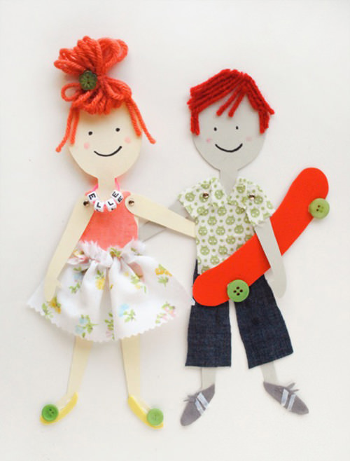

Who am I?
Hi, I'm Bison! :D
I'm a 2D rig artist who was born in France but lives in Canada.
Hi, I'm Bison! :D
I'm a 2D rig artist who was born in France but lives in Canada.
Basically, you remember when we made paper puppets as kids? The ones with metal joints for the articulations… Like those!

Basically I do the same thing, but on the computer for TV series, movies and advertising hahaha. My job is always a bit difficult to explain, because I do work in animation but I don't really draw nor animate. I get the design of the character I have to transform into a puppet from the design department, then trace it back into the animation software we use. I then cut the tracing I made in different pieces, like the hand, forearm, arm, head, neck, torso, etc. The more complex the character, the more pieces! Very simple puppets will typically have about 15 pieces, while complex one can have well over a hundred. It all depends on the design and the client's budget lol.
When I have all my pieces, I have to plug everything in the software to make sure that all the right pieces are connected together, that the arm articulation is at the right place, etc. I can also add deformers! As their name says, it's a tool that will give the animator the possibility to deform the piece it's attached to. As an example, if you take Mickey Mouse's tail, I could just make his tail a straight line and add a deformer on it. The animator then would be able to deform it and curve it as they see fit.
When my puppet is done, we send it to animation and I never see it again lol. A very simple puppet takes about half a day, but complex ones take 3-4 days on average. The most complex character I've ever rigged was full of details, she had a multicoloured jacket with patches, and she was using a sci-fi wheelchair. It took me about one month and a half to complete everything hahaha.
Here are two examples of puppets I've made for work! Don't worry, I have the authorization to share them hahaha